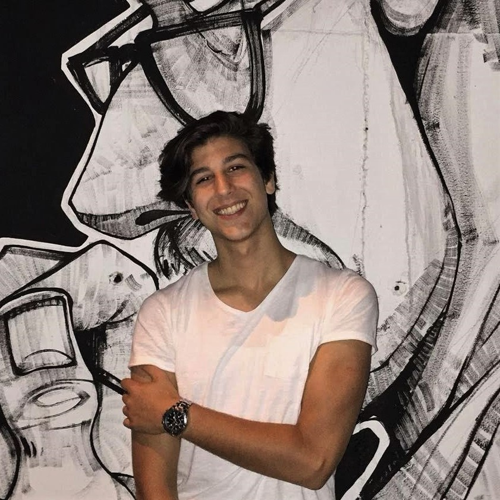
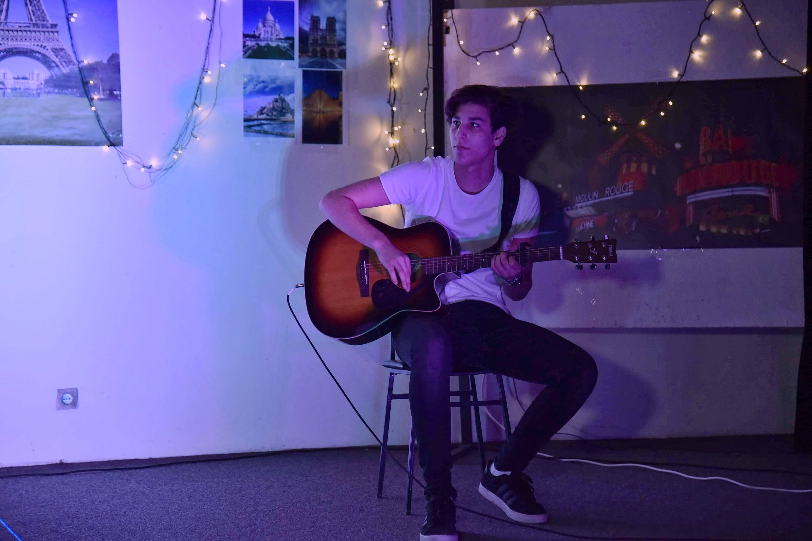

Who am I?
I am a young 21 year old creative person, bright by nature and always in an optimistic mood. In terms of my everyday tasks, as well as the obligations being given, I am responsible, executive and meticulous. I usually make plans in advance and I`m fully invested in them, so I can accomplish my objective more complete and with higher quality.
My current goal is implementing my knowledge and hard work into things that will contribute for improving and perfecting, while simplifying certain technological processes.
I love people and it has never been a problem of mine to work with anyone, anywhere, in a smaller or bigger team. In line with today`s fast pace of living and functioning, I fit in the best I can, given that I am quickly accessible, mobile and adaptable, respecting other people's time.

Education
In the moment I am an active student in third year at the Faculty of Computer Science and Engineering – FINKI. The choice for this faculty isn`t at all accidental. I got and grew my desire and vision for these studies, since very young age, so I did my best to make It happen. That`s the exact reason why I finished the most elite high school education in “Rade Jovcevski - Korcagin”, with an emphasis on natural sciences, especially, mathematics.
After successfully completing these past two years of my studies, with the newly acquired knowledge in areas that have interested me for a long time, I have more plans in mind. I`ve already started making small personal projects, as a starting point through which I will enter the world of practical programming and development.
My goal is to apply to several places that face with such issues and to be incorporated into an already established and reliable team that operates at a higher level. Along the way I`ll try to give my maximum contribution, I`ll strive to learn a lot and with time to upgrade myself and my knowledge.
Work related skills
Communication Skills
As a result of my wide personal past experience acquired through a number of group projects, with various types of peoples characters, I believe I am clear, exact, explicit and to the point, regardless of the type of communication being conducted. Being an extrovert myself, I strive to be eloquent in expressing my thoughts and plans. Of course, since communication is a two way street, speaking aside, I am patient and careful while listening to my interlocutor. One of my most important acquired skills is fully understanding the thoughts of the speaker/s. Being an active user of both English and French, also comes in handy when trying to communicate to most associates or just people.
Organisation Skills
I am responsible and executive person with an expressive spirit, who almost always leads and represents the team I am a part of. Being the person I am, I`m always open for cooperation!
Computer Skills
As an active student at the Faculty of Computer Science and Engineering I have acquired quality basic knowledge of informatics and programming. Additionally, my personal research in things that interest me most and some useful courses along the way have also helped me better understand a few more areas related to computers and the science behind them, how they work, and most importantly how to work with them.
C/C++
HTML
CSS
JavaScript
Java
Microsoft Office Package
Key Skills
Organised & Constructive
Cooperative
(online & in person)
(online & in person)
Idea & Realisation
Creative & Suggestive
Precise & Focused
Persistent & Invested
My life goal
Some people choose to focus only on one issue throughout their working life, however I prefer to dedicate my focus and attention on several fields in which I would devote myself studiously and relentlessly, until I achieve a quality result, with which I expect to contribute more times in more areas simultaneously.
The tech enthusiast inside me
As long as i can remember, I`ve been amazed by and somewhat obsessed with technology. The interest for it, probably sparked in me while watching some sci-fy movies when I was just a kid, then progressed into me being actively a part of tech communities, supporting tech channels or people on the internet and reading news about the latest and greatest achievements in the tech world. Initially phones, laptops and some useful gadgets got my attention, however, with me growing and maturing, the organisation, time, work and practically the whole build up before each and every product release by a company, made me interested in how that tech related company works, creates, develops and maintains everything on it`s product list.
In this vast tech space, recently I`ve been most interested in the work of Elon Musk and his two companies - giants: Tesla and SpaceX. Other people I look upto are: Bill Gates and Marques Brownlee.
Me and sports
Many things in life give me pleasure. In addition to the studies, I spend part of my time on various sports activities. Whenever I have the opportunity to join a team, I do so, and I prefer to play football, basketball and volleyball. Cycling and running are in my daily routine, while swimming is always a pleasure when I get the chance to do so. With these three disciplines I have taken part in several marathons and triathlons so far.
Me and my guitar
Not one person exists, who doesn`t like music. I love it and interpret it, playing my guitar.
Me and the altruism inside me
The feeling of helping someone, in any way, always brings pleasure. I have chosen a simple, while at the same time noble way, to experience it many times, through blood donation. As long as I exercise and feel healthy, I will do just that.